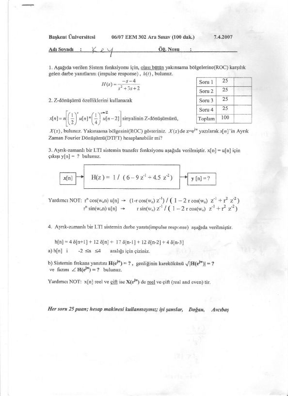
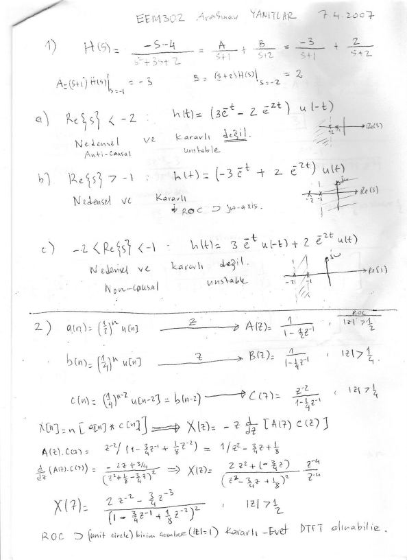
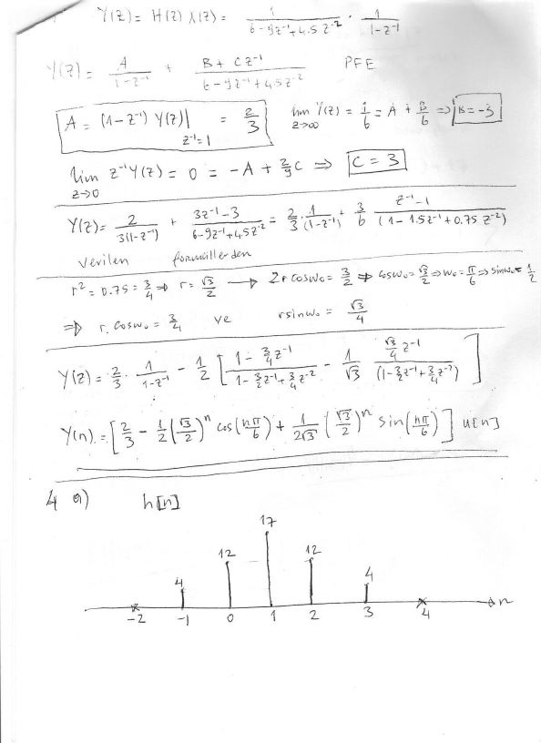
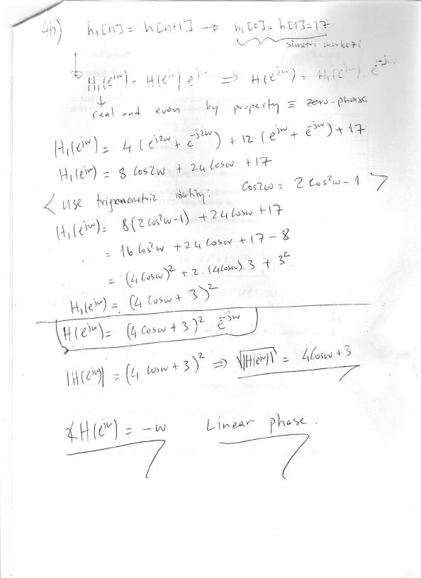

· EEM308
EEM308 Sinyaller ve Sistemler II: 2007 Ara Sınavı ve Cevap Anahtarı (EEM 302)
EEM308 – Sinyaller ve Sistemler II · 07.04.2007 · 16.10.2026
Bu yazı, Başkent Üniversitesi 06/07 EEM 302 Sinyaller ve Sistemler II dersinin 7 Nisan 2007 tarihli ara sınavını ve sınavın el yazısı cevap anahtarını ("EEM302 Arasınav Yanıtlar") içeriyor. Ders daha sonra EEM 308 koduyla verilmeye devam etti. Sınav kâğıdının altında hocaların adları Doğan ve Avcıbaş olarak geçiyor; ad kısmına "Key" yazılmış bu kâğıt sınavın çözüm nüshası. Sınav 100 dakika, dört soru, her soru 25 puan; hesap makinesi kullanılmıyor. Taranmış dört sayfa yazının sonunda PDF olarak indirilebilir.
Sorular
1. Aşağıda verilen sistem fonksiyonu için, olası bütün yakınsama bölgelerine (ROC) karşılık gelen darbe yanıtlarını (impulse response) h(t) bulunuz.
H(s) = (−s − 4) / (s² + 3s + 2)
2. Z-dönüşümü özelliklerini kullanarak
x[n] = n · [ (1/2)ⁿ u[n] ∗ (1/4)ⁿ⁻² u[n − 2] ]
sinyalinin z-dönüşümünü X(z) bulunuz. Yakınsama bölgesini (ROC) gösteriniz. X(z)'de z = e^{jω} yazılarak x[n]'in ayrık zaman Fourier dönüşümü (DTFT) hesaplanabilir mi?
3. Ayrık zamanlı bir LTI sistemin transfer fonksiyonu H(z) = 1 / (6 − 9z⁻¹ + 4,5z⁻²) olarak verilmiştir. x[n] = u[n] için çıkış y[n] = ? bulunuz.
Yardımcı not:
- rⁿ cos(ω₀n) u[n] ↔ (1 − r cos(ω₀) z⁻¹) / (1 − 2r cos(ω₀) z⁻¹ + r² z⁻²)
- rⁿ sin(ω₀n) u[n] ↔ r sin(ω₀) z⁻¹ / (1 − 2r cos(ω₀) z⁻¹ + r² z⁻²)
4. Ayrık zamanlı bir LTI sistemin darbe yanıtı aşağıda verilmiştir:
h[n] = 4δ[n+1] + 12δ[n] + 17δ[n−1] + 12δ[n−2] + 4δ[n−3]
- h[n]'i −2 ≤ n ≤ 4 aralığı için çiziniz.
- Sistemin frekans yanıtını H(e^{jω}), genliğinin karekökünü √|H(e^{jω})| ve fazını ∠H(e^{jω}) bulunuz.
Yardımcı not: x[n] reel ve çift ise X(e^{jω}) de reel ve çifttir (real and even).

Cevap anahtarı
Soru 1: ROC'a göre darbe yanıtları
Kısmi kesirlere ayırma:
H(s) = (−s − 4) / ((s + 1)(s + 2)) = A/(s + 1) + B/(s + 2)
A = (s + 1)H(s) |ₛ₌₋₁ = −3, B = (s + 2)H(s) |ₛ₌₋₂ = 2, yani H(s) = −3/(s + 1) + 2/(s + 2).
Kutuplar s = −1 ve s = −2'de olduğu için üç ROC mümkün:
| ROC | h(t) | Yorum |
|---|---|---|
| Re{s} < −2 | (3e⁻ᵗ − 2e⁻²ᵗ) u(−t) | Nedensel değil (anti-causal), kararlı değil |
| Re{s} > −1 | (−3e⁻ᵗ + 2e⁻²ᵗ) u(t) | Nedensel ve kararlı; ROC jω eksenini içeriyor |
| −2 < Re{s} < −1 | 3e⁻ᵗ u(−t) + 2e⁻²ᵗ u(t) | İki taraflı (non-causal), kararlı değil |
Soru 2: Z-dönüşümü özellikleri
- a[n] = (1/2)ⁿ u[n] → A(z) = 1 / (1 − ½z⁻¹), |z| > 1/2
- b[n] = (1/4)ⁿ u[n] → B(z) = 1 / (1 − ¼z⁻¹), |z| > 1/4
- c[n] = (1/4)ⁿ⁻² u[n − 2] = b[n − 2] → C(z) = z⁻² / (1 − ¼z⁻¹), |z| > 1/4
x[n] = n·(a[n] ∗ c[n]) olduğundan, konvolüsyon ve "n ile çarpma" özellikleriyle X(z) = −z · d/dz [A(z)C(z)]:
A(z)C(z) = z⁻² / (1 − ¾z⁻¹ + ⅛z⁻²) = 1 / (z² − ¾z + ⅛)
d/dz [A(z)C(z)] = −(2z − ¾) / (z² − ¾z + ⅛)²
X(z) = (2z⁻² − ¾z⁻³) / (1 − ¾z⁻¹ + ⅛z⁻²)², |z| > 1/2
ROC birim çemberi (|z| = 1) içerdiği için sistem kararlıdır; evet, DTFT alınabilir.
Soru 3: Birim basamak yanıtı
Y(z) = H(z)X(z) = 1 / (6 − 9z⁻¹ + 4,5z⁻²) · 1 / (1 − z⁻¹)
Kısmi kesirler: Y(z) = A/(1 − z⁻¹) + (B + Cz⁻¹)/(6 − 9z⁻¹ + 4,5z⁻²)
- A = (1 − z⁻¹)Y(z) |_{z⁻¹=1} = 2/3
- lim_{z→∞} Y(z) = 1/6 = A + B/6 ⇒ B = −3
- lim_{z→0} z⁻¹Y(z) = 0 = −A + (2/9)C ⇒ C = 3
Y(z) = (2/3) · 1/(1 − z⁻¹) + (3/6) · (z⁻¹ − 1)/(1 − 1,5z⁻¹ + 0,75z⁻²)
Verilen formüllerle eşleştirme: r² = 0,75 ⇒ r = √3/2; 2r cos ω₀ = 3/2 ⇒ cos ω₀ = √3/2 ⇒ ω₀ = π/6, sin ω₀ = 1/2. Buradan r cos ω₀ = 3/4 ve r sin ω₀ = √3/4.
Y(z) = (2/3) · 1/(1 − z⁻¹) − ½ [ (1 − ¾z⁻¹)/(1 − ³⁄₂z⁻¹ + ¾z⁻²) − (1/√3) · (√3/4)z⁻¹/(1 − ³⁄₂z⁻¹ + ¾z⁻²) ]
y[n] = [ 2/3 − ½ (√3/2)ⁿ cos(nπ/6) + (1/(2√3)) (√3/2)ⁿ sin(nπ/6) ] u[n]
(Kontrol: y[0] = 2/3 − 1/2 = 1/6, bu da doğrudan fark denkleminden 6y[0] = 1 ile tutuyor.)
Soru 4: Doğrusal fazlı sistem
a) h[n]'in değerleri:
| n | −2 | −1 | 0 | 1 | 2 | 3 | 4 |
|---|---|---|---|---|---|---|---|
| h[n] | 0 | 4 | 12 | 17 | 12 | 4 | 0 |
Dizi n = 1 etrafında simetrik.
b) h₁[n] = h[n + 1] tanımlanırsa h₁[0] = h[1] = 17 simetri merkezi olur; h₁[n] reel ve çift olduğundan H₁(e^{jω}) de reel ve çifttir (sıfır fazlı). Kaydırma özelliğiyle H(e^{jω}) = H₁(e^{jω}) e^{−jω}.
H₁(e^{jω}) = 4(e^{j2ω} + e^{−j2ω}) + 12(e^{jω} + e^{−jω}) + 17 = 8 cos 2ω + 24 cos ω + 17
cos 2ω = 2cos²ω − 1 özdeşliği kullanılırsa:
H₁(e^{jω}) = 16 cos²ω + 24 cos ω + 9 = (4 cos ω + 3)²
H(e^{jω}) = (4 cos ω + 3)² e^{−jω}
| H(e^{jω}) | = (4 cos ω + 3)² ⇒ √ | H(e^{jω}) | = 4 cos ω + 3 |
|---|
∠H(e^{jω}) = −ω: doğrusal faz (linear phase).
Not: Kesin yazımla √|H(e^{jω})| = |4 cos ω + 3| olmalıdır; 4 cos ω + 3 ifadesi cos ω < −3/4 için negatif olur. Faz ise (4 cos ω + 3)² ≥ 0 olduğundan her yerde −ω'dır.
El yazısı çözüm sayfaları


